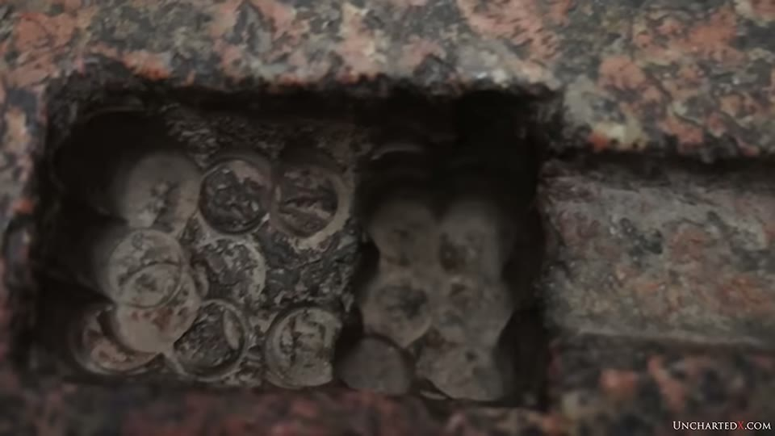
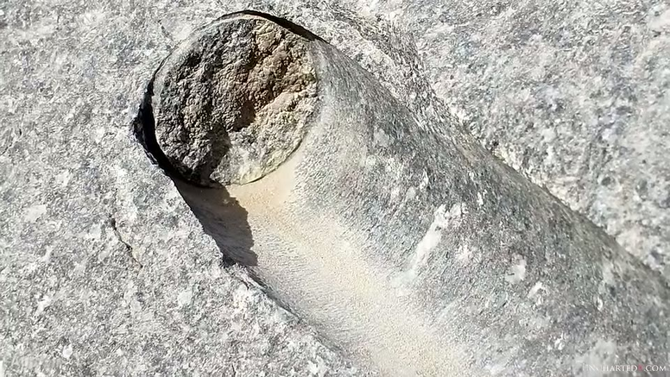
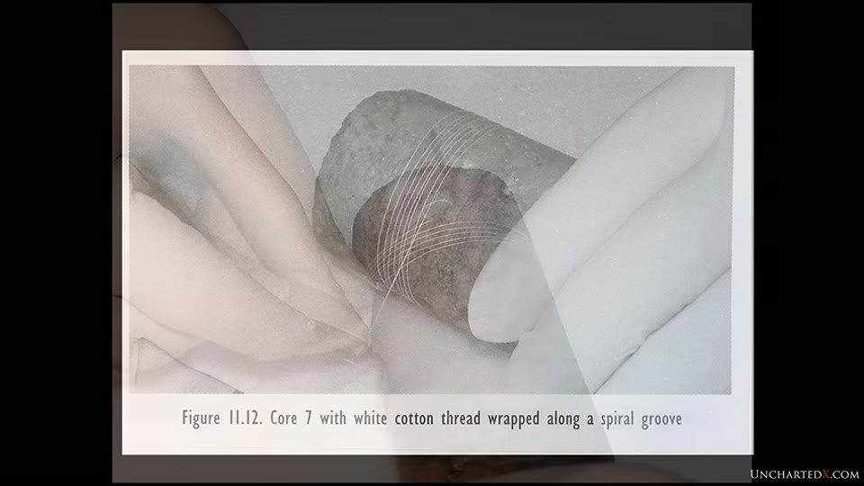

UnchartedX
The Story of the Enigmatic and Mysterious Tube Drills of Ancient Egypt
Ben · 64 min · watch on YouTube · summarised 2026-09-28
The video has a single target. Not "how was ancient Egypt built" but: do the grooves on one granite drill core in the Petrie Museum form a continuous spiral, or a stack of separate horizontal rings?
Everything turns on that. A spiral means the tool advanced a fixed distance into the stone with every rotation, and that distance can be measured. Horizontal rings mean nothing of the kind, and abrasive drilling with sand explains them without difficulty. Ben's argument is that the mainstream has spent a century answering a different question.
What tube drills are, and where the marks are
Hollow drills, not solid bits, worked into granite, diorite, basalt and schist, with rarer examples in alabaster and travertine 04:46–05:06. The wall thickness can be judged from the lip left in some holes 05:26–05:34.
The marks and the cores turn up across Egyptian sites 03:22–04:22: cut into megalithic blocks and slabs; between the feet of Old Kingdom statues; on the granite boxes; concentrated at the Old Kingdom sites of Abusir and Abu Ghurab; and at Giza and Saqqara, where cores have been recovered. Sizes run from small holes in the lip of a box to 12–14 inches, the largest in a coffer in the Cairo Museum with four holes through it.

Tube drilling was used to remove material in bulk, not to make single holes.
Two technical points that the rest of the argument depends on 05:35–07:44:
- The drill's purpose was removing material. A hole is cut, the core is snapped off with a chisel, and the core comes out. Cores survive in the archaeological record, and they carry the marks.
- The holes and cores are not straight. The core tapers inward as the hole goes deeper.

The drill was a thin-walled tube, and the wall thickness can be seen in the lip it left.
The two candidate methods
Stated plainly, and the whole debate lives here 26:28–26:58:
| how it cuts | what it should leave | |
|---|---|---|
| Abrasive powder | loose sand or grit dragged round by a soft copper tube | shallow concentric scratches, shallower in the harder mineral |
| Fixed cutting points | hard points rigidly set in the tool, ploughing the stone | a continuous helical groove, equally deep in every mineral |
Petrie, and what he actually said
Petrie investigated tube drills in The Pyramids and Temples of Gizeh (1883) and in an address to the Anthropological Institute, and Ben reads him at length rather than summarising 16:16–25:27. Two observations on the granite core he numbered 7, which is still in the Petrie Museum:
"The grooves which run around it form a regular spiral, with no more interruption or waviness than is necessarily produced by the variations in the component crystals… in one part a groove can be traced with scarcely an interruption for a length of four turns."
"The grooves are as deep in the quartz as in the adjacent feldspar, and even rather deeper. If these were in any way produced by loose powder they would be shallower in the hardest substance, quartz, whereas a fixed point would be compelled to plough to the same depth in all the components."
The second is a prediction that distinguishes the two methods rather than a description of the core.
The core has a number, and it is readable on screen. It is written on the stone itself and appears on the museum's own catalogue card in frame: UC 16036, described there as "Gizeh. Granite Core from Tubular Drill Hole. Pyramids & Temples of Gizeh… Tools & Weapons". Petrie's "core 7" and Petrie Museum UC 16036 are the same object, which is what makes the dispute addressable by anyone who can reach London.

The object the whole argument is about is numbered and catalogued.
Petrie also estimated the force involved 30:32–31:40: a groove one hundredth of an inch deep in quartz needs over a hundredweight on the point; perhaps ten points across the cut; a minimum of half a ton, and more likely two or three tons on a four-inch drill. His comparison for the cutting rate is a saw going through seven inches of wood in seven strokes — except the material is granite.
Petrie's own explanation was not a lost civilisation, and Ben says so 25:27–26:28. Petrie proposed bronze tools set with fixed cutting jewels — beryl, topaz, chrysoberyl, corundum or diamond — and settled on corundum as most likely. Ben's reading is that Petrie was faithful to his observations while trying to explain them within the capabilities of dynastic Egypt, because an earlier advanced civilisation was not a thought available to him.
What the mainstream did with it
Ben's charge is specific and repeated: the responses do not engage the spiral claim, they work around it.
The 1983 University of Pennsylvania study 27:12–29:16. Researchers drilled granite with combinations of sand, water, lubricants and grits, and photographed the cores under a scanning electron microscope. Ben's objection is that the word "spiral" does not appear in the report; it states that the marks on drill cores are concentric. He calls the study itself commendable and its results indeterminate. Its findings as he reports them:
- dry sand, wet sand and crushed quartz left no appreciable mark on the granite cores, just a rough surface
- emery, corundum and diamond slurry left many fine concentric rings — scratches rather than grooves
The report's own figure captions are legible on screen and are more careful than the summary suggests. Of the emery result: "Abrasion lines on the inner and outer walls are evident. These occurred when the emery was used wet, with olive oil or with a modern lubricant." Of the diamond: "A finding similar to that produced by both emery and corundum is evident. It would be of interest to determine what pattern would be produced by beryl and topaz, whose Mohs hardness is 8." The report is there proposing a test with beryl and topaz — two of the jewel points Petrie named.

Abrasive drilling leaves fine concentric scratches, not deep grooves.
The NOVA / PBS special with Mark Lehner 37:07–40:20. Copper tubes, sand and water on granite; after a few days, an inch of progress and a core extracted. What is shown is a browser playing a third-party YouTube re-upload titled Granite Cutting and Drilling, not the broadcast programme — Ben says as much, that he has linked "what there is of it that you can find on YouTube". Ben's points against it:
- Petrie is never mentioned, and neither is the word spiral.
- How the hole was started is never addressed, though the method for starting the saw cut is.
- The core is broken out with a steel chisel. They had bronze chisels on camera earlier. Dunn found the same thing in his own drilling: bronze bends against granite, so he had to use steel. Ben treats this as a flaw in the demonstration itself, the extraction being part of the method on show.
- The result is never compared with an actual Old Kingdom core.

The televised demonstration, and how the core was extracted.

An Old Kingdom hole and a modern copper-and-carbide test drill, side by side.
Denys Stocks 40:41–44:00, whose experiments are in the academic record and are cited by Dieter Arnold in Building in Egypt, reported of a core he ground from granite with quartz sand and a bow-driven copper tube: "horizontal striations similar to the ancient ones on rose granite were visible both in the wall of the hole and upon the core." Stocks explained Petrie's helical groove as the random action of quartz sand. Ben's response is that this does not challenge Petrie's measurements; it asserts a different result from a different object.
The part the video exists for
John Reid, an acoustics engineer, and Harry Brownlee, a stonemason and sculptor, went to London to examine core 7 and concluded the grooves were horizontal 44:32–45:40. Their conclusion was cited in Ian Lawton and Chris Ogilvie-Herald's Giza: The Truth, which reports that they examined and photographed the core "in minute detail", found only horizontal striations, and could only conclude there may have been confusion in the labelling of the artefact at the museum.
Ben's first objection is that Petrie published measurements and Reid and Brownlee published photographs 45:40–46:32: "They didn't take measurements, they didn't do any real analysis, they just took photographs."
His second is the one that carries the video. Dunn examined the published plate and found that the photograph had been rotated on the page, so that a groove with a slight pitch reads as horizontal 46:32–48:27. Dunn's account, quoted:
"Plate 25a shows core number 7 as seen in Giza: The Truth. Plate 25b shows core number 7 in a corrected orientation with a vertical central axis… the horizontal dashed line indicates that the grooves appear to be horizontal in plate 25a and tilted in plate 25b."

The published photograph said to show horizontal grooves was printed tilted; righted, the grooves diverge from the horizontal.
Ben allows that this was "either a very unfortunate mistake… or if it was deliberate you can only describe this as being somewhat deceptive", and does not choose between them.
Dunn then went to the core twice, in 1999 and 2003, and did three things 48:45–52:13:
- Wrapped a thread into the groove and followed it round 16 times without leaving it. Malcolm McClure, a retired engineer, repeated the wrap himself and — in Dunn's telling — declared himself speechless.

A thread laid in the groove can be followed round the core without leaving it.
- Took a latex moulding of the core, rolled it flat, and referenced the two edges against each other, which resolves geometrically whether an arc is horizontal or helical.

Unrolled flat, the groove can be tested geometrically rather than by eye.
- Updated Petrie's measurements with modern equipment.
His conclusion, quoted in full by Ben: the groove is a spiral, it travels the full length of the core, and the discontinuities are where mica has been ripped out of the granite.
Why it matters, in one line: from the spiral's pitch Dunn derives a feed rate of 0.1 inch per revolution, against 0.0002 inch for modern diamond drills — 500 times greater 32:47–33:14. Dunn's proposed mechanism is ultrasonic, chosen because quartz is resonant, which would also account for the groove cutting deeper in the quartz than the feldspar 33:38–34:31.
Where he takes it
The wider frame is the one he holds across the channel and states as opinion 52:13–54:16: an advanced civilisation before the dynastic Egyptians, largely destroyed at the end of the last ice age, whose objects were inherited, reused and written on by the people who came later. He puts the Old Kingdom itself forward as the anomaly that view explains 10:44–12:55 — the earliest period producing the largest and most precise work, with capability declining for thousands of years afterwards.
What you can check yourself
- Core 7 is in the Petrie Museum in London, catalogued as UC 16036. The whole argument is about one object that is numbered, publicly held, and has been examined by both sides. The number is legible on screen.
- Petrie's publications. The Pyramids and Temples of Gizeh (1883) and his 1883 address, printed in the Anthropological Institute's journal for 1885, both carry the spiral claim with dimensions attached.
- The prediction that separates the two methods. Whether a groove is deeper or shallower in quartz than in the feldspar beside it distinguishes a fixed point from loose abrasive, and it can be checked on any core with a hand lens.
- **The two plates in Giza: The Truth.** Whether the published photograph of core 7 is tilted is a question anyone with the book and a straight edge can answer.
- Tube drill marks at Abusir, Abu Ghurab, Giza and Saqqara, and between the feet of Old Kingdom statues in museums worldwide.
What the video does not settle
- It rests on one object, and says so. Every load-bearing claim — the spiral, the equal depth in quartz, the feed rate — comes from core 7. Petrie cites other pieces, but the modern examination is of this one core. The video's own account contains a rival suggestion — that the museum's labelling of the artefact is confused — which it dismisses rather than tests.
- The presenter has not examined it. This is an account of Dunn's account of Petrie. Ben does not visit the Petrie Museum in this video, does not handle the core, and does not repeat the thread wrap. The evidence he calls conclusive he has read rather than seen.
- Dunn's demonstrations are reported, not reproduced. The flat layout, the arcs and the measurements appear here as quotations from a book. No figures from them are given, and no step is repeated on camera.
- Petrie's own conclusion is not the video's conclusion. Petrie proposed fixed jewel points in bronze tools, made and used by the dynastic Egyptians, and it is his observations the video relies on throughout. The video sets his explanation aside on the grounds that an earlier advanced civilisation was not a thought available to him. No physical objection to the jewel-point proposal is offered here; one is offered two months later in the addendum, and it is Petrie's own — his worry that the bronze tube would fold or bend before the granite cut.
- The feed rate is a calculation from the pitch, not a measurement of a rate. Nobody watched the hole being cut. If the groove is a spiral, the tool advanced 0.1 inch per turn; how fast the turns happened, and therefore how fast the work went, is not established by the groove.
- Nothing here is dated. The cores come from Old Kingdom contexts. That the marks are older than the contexts they sit in is the video's premise, not its finding.
- The charge against the studies is about what they omit. The Pennsylvania report says concentric and never says spiral; the NOVA programme never mentions Petrie and never compares its core with an ancient one. Neither source is shown examining core 7, so what either would say about that object is not on the record here.
- The ultrasonic proposal is speculation and is labelled as such by Dunn. No reproduction of a spiral groove in granite is shown by any method — ultrasonic, jewel point or abrasive. The addendum goes further and quotes Dunn withdrawing it in print after examining the core himself.
The same dispute, from the other end
Ancient Egyptian Stone Vases: Lost Machining Techniques? argues the abrasive case by a route this video does not address: that predynastic Egyptians were drilling carnelian, quartz and red garnet — materials as hard as granite or harder — with bow and pump drills and abrasive slurry, thousands of years before the Old Kingdom; and that the British Museum's own label for a predynastic stone jar puts a trained worker at 10 to 40 hours for a small vessel.
The two arguments are about different objects. That video asks whether abrasive drilling was available to predynastic Egypt and capable of those materials, and answers yes. This one asks whether abrasive drilling produced the marks on core 7, and answers no. Neither addresses the other's evidence: she does not discuss core 7, and he does not discuss the drilled gemstones.
Names heard rather than confirmed
No caption track exists for this channel, and this 2019 transcript is the worst of the three UnchartedX videos summarised so far — "tube jewels" for tube drills, "cause" for cores throughout, "call number seven" for core number 7, "Mark Lane as" for Mark Lehner's. Names corrected from context: Flinders Petrie, Mark Lehner, Denys Stocks (spoken as "Dennis"), Christopher Dunn, John Reid, Harry Brownlee, Malcolm McClure, Dieter Arnold, Ian Lawton and Chris Ogilvie-Herald, Abusir and Abu Ghurab. The alabaster object at Abu Ghurab is named in the audio in a form that could not be resolved and is not identified here.